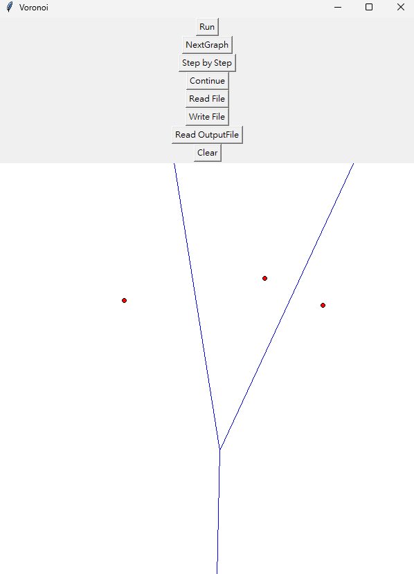
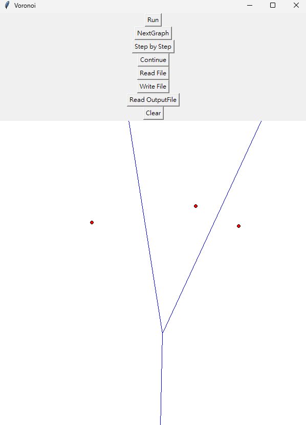

程式設計
：將演算法於程式設計中，需要使用的資料結構，所需注意的細節或特別的技巧，在此部分講述。如果演算法有改良之處，亦在此描述。
Class
- Voronoi
此Class主要處理與Vornoi Diagram相關的功能，舉例:
- 解voronoi diagram
- convex hull
- devide and conquer
- hyper plane
- Graph
此Class主要處理與Graph相關的功能，舉例:
- 計算line兩端點的最大邊界
- 裁切線段回傳畫布上兩端點
- 新增、紀錄點線
- 找出線段交點
- 與線段相關的功能
- Uiapp
此Class主要處理與UI相關的功能，舉例:
- 處理button的點擊及call function
- 處理Interrupt
- 處理Input及Output
資料結構
點
線段
- draw1, draw2
- point_a, point_b
- edge_piont1, edge_point2
- id
點的資料結構為一個list，存放每個點的座標，格式為[(x, y), ..., (x, y)]。
點的id資料結構為一個list，存放每個點的id，格式為[id, ..., id]。
線段的資料結構為一個list，存放每條線段的資訊，格式為
[[draw1, draw2, point_a, point_b, edge_piont1, edge_point2, id],...]。
draw1, draw2為畫布上的線段兩端點。
point_a, point_b為畫布上的兩點畫出來的Voronoi線段。
edge_piont1, edge_point2為超出畫布外但仍為此線段的兩端點。
id為線段的id。
演算法
三點以下: 暴力解
-
一個點
一個點不存在 Voronoi 線段，因此回傳 Voronoi 空集合。
-
兩個點
兩個點的 Voronoi 線段為兩點的中垂線。

-
三個點
- 判斷三角形的類型，若為三點共線須進行例外處理(回傳兩條Voronoi線段: 由三點中的中間頂點與另外兩點的中垂腺)
- 找出三角形的外心，外心為三點的垂直平分線的交點
- 銳角三角形：由外心向三頂點的射線為 Voronoi 線段
- 鈍角三角形：與 3-1 不同之處在於其中一條 Voronoi 線段會由外心遠離兩個銳角頂點，形成與鈍角頂點相對的線段
 

四點以上: Devide and conquer
分割 (Divide)
步驟
將所有點依據 x 座標排序，並將點分為左右兩個子集合並回傳。
合併 (Merge)
-
Convex Hull
使用 Graham's Scan 演算法計算凸包。具體步驟如下：
- 找到最左下的點作為基準點。
- 將其他點按相對基準點的極角進行排序，若角度相同則按距離排序。
- 依次遍歷排序後的點，使用 叉積 (Cross Product) 判斷點是否形成逆時針方向的凸包邊界。
- 如果形成順時針方向，移除最後加入的點，確保邊界是凸的。
最終結果為一個封閉的凸包，包含所有點。
-
合併凸包
- 將左右兩部分的頂點集合進行合併。
- 重新對合併後的點集進行凸包計算（使用 Graham's Scan）。
- 合併後的凸包包含所有輸入點的外部邊界。
此部分的時候我沒有依序由左Convex Hull最右點及右Convex Hull最左點順逆時針刪除造訪到的點， 而是直接將左右Convex Hull的點全部合併，並重新呼叫Convex Hull函數，找出新的Convex Hull，此部分可以再改善。
-
找出上下切線
對合併後的左右凸包，找到其 上公切線 和 下公切線，具體步驟如下：
-
下公切線：
- 從左凸包的最右點和右凸包的最左點開始。
- 固定右側點，調整左側點，使切線方向順時針旋轉。
- 固定左側點，調整右側點，使切線方向逆時針旋轉。
- 直到左右兩邊的點不再移動，即確定下公切線。
-
上公切線：
- 從左凸包的最右點和右凸包的最左點開始。
- 固定右側點，調整左側點，使切線方向逆時針旋轉。
- 固定左側點，調整右側點，使切線方向順時針旋轉。
- 直到左右兩邊的點不再移動，即確定上公切線。
例外情況處理：
當兩個凸包的點共線時（即切線與一條邊完全重合）：- 程式檢查三個點是否共線（切線的兩端點與第三點），並計算點與邊的相對位置。
- 如果三點共線，切線會選擇遠離另一側凸包的方向，避免重複或錯誤計算。
- 當切線完全共線且有多個候選點時，程式會選擇最靠外的點作為最終的切線端點。
這種處理方式保證了切線的正確性，避免因共線情況導致的邊界錯誤。
-
下公切線：
-
計算中間的垂直平分線（Hyperplane）
對下公切線與上公切線進行處理，找到其垂直平分線，這是左右兩部分 Voronoi Diagram 的分界線。
使用一條由下公切線開始，垂直向上的射線，逐步向上找到各條垂直平分線。
-
處理相交點與線段
垂直平分線向上延伸時，可能與左右兩邊的 Voronoi 線段相交。
- 對每個相交點進行處理。
- 刪除遠離垂直平分線的 Voronoi 線段。
- 將新的線段加入合併後的 Voronoi Diagram。
-
清理孤立線段
在合併過程中，可能出現孤立的 Voronoi 線段（例如，兩端都無法與其他線段相連的線段）。
將這些孤立線段刪除，保證合併後的 Voronoi Diagram 正確無誤。
-
整合結果
最終的合併結果包括：
- 左右兩部分的 Voronoi Diagram。
- 新計算出的垂直平分線。
整合後形成完整的 Voronoi Diagram，覆蓋所有輸入的點。
視覺化流程
- 分割為左右兩部分，各自生成 Voronoi Diagram。
- 找到上下公切線，作為兩部分的初步連接。
- 逐步修剪與延伸，形成完整的合併結果。

分割步驟

合併步驟

完整結果